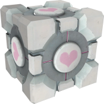

Companion Cube
The Companion Cube is from a video game called Portal. It is a physics based platformer that uses portals to solve various tests (puzzles) put forth by GLaDos; an AI that became sentinet and killed everyone in the Aperature Laboratories where she was built. She now forces test subjects, who she kept in prolonged stasis, to complete her puzzles... for science. She gives the player this companion cube during one of the puzlles, which she implies is somewhat sentient. At the end of the test chamber you are forced to throw the Companion Cube into a fire pit... It's so unsettling, it has stuck with me for years.
If you want to know more click the link below!